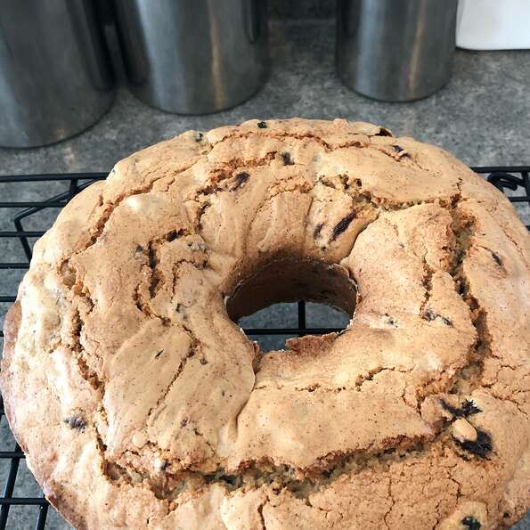

Sultana Cake

Description
Sometimes it’s the most simple of cakes that has the biggest impact. And this delicious Sultana Cake is definitely one of those. Best enjoyed with a cup of tea and good company!
We did a lot of testing on this one to make sure that we got it just right. There were quite a lot of traditional Sultana Loaf recipes out there, so we gave most of them a go, including a cherished family recipe, and made some tweaks to create this one.
Ingredients
- 2 cups sultana rasins
- water, or as needed
- 10 tablespoons butter, diced
- 2 cups white sugar
- 3 eggs
- 3 cups all-purpose flour
- 1 1/2 teaspoons baking powder
- 1/2 teaspoon vanilla extract
Steps
- Preheat an oven to 325 degrees F (165 degrees C). Lightly grease a 9 inch round cake pan.
- Put the raisins in a saucepan with enough water to cover and bring to a boil; reduce heat to medium low and allow to simmer for 15 minutes. Drain the water from the raisins. Stir the butter into the raisins until it melts and coats the raisins.
- Beat the sugar into the eggs in a bowl. Sift the flour and baking powder together in a separate bowl. Stir the raisins and vanilla into the egg mixture; add the flour mixture and stir until just mixed. Pour the batter into the prepared cake pan.
- Bake in the preheated oven until a toothpick inserted into the center of the cake comes out clean, about 75 minutes. Cool in the pan for 10 minutes before removing to cool completely on a wire rack.